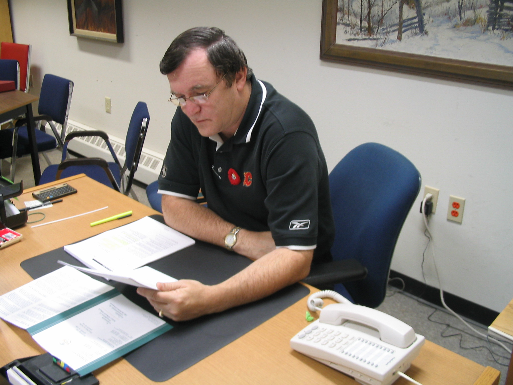

No. 76 November 14, 2007
Executive Director

CFPEI is pleased to welcome Don MacDonald to the position of Executive Director. He is Island-born, a graduate in accounting of both Holland College and UPEI and holds national recognition as a CGA. Don has been employed for 28 years with the Government of Prince Edward Island in the area of auditing, accounting and finance.
In addition, Don has been immersed in a wide variety of computer applications in information technology and has been intimately involved in pension administration including investment. He, along with his family, is active in sports.
Don and his wife, Sharon, and family live in Cornwall, PEI; their three sons are enrolled at UPEI.
Lantz Fund Established
Family and Friends of Gwenyth Lantz, daughter of Mary and the late Rory Lantz, were saddened by her recent death.
She also leaves a daughter, Cydney.
In her memory, the J. Gwenyth Lantz Memorial Fund has been established at the Community Foundation of Prince Edward Island. Contributions may be made by contacting the Foundation at 892-3440 or electronically through Canada Helps on the Foundation Website, www.cfpei.ca
Donor Interest
One of our anonymous donors has expressed an interest in working through the Foundation to channel grants for the relief of needy persons in Eastern Prince Edward Island.
In the donor’s words, this could include, but not limited to, small grants directly to individuals for such things as “transportation to a job interview, lunch money for children, ???
The Foundation would welcome informal written expressions of interest from charitable organizations providing such services. CFPEI, Suite 105, 119-121 Queen St. Charlottetown, PE C1A 4B3 Tel: 902-892-3440
____________________________________
The Community Foundation News is an informal newsletter, in electronic form only, edited and published by, and at the whim of, Don Glendenning. Think of it as a letter from a friend. Forward this to others who may be interested. For further information, check our website, www.cfpei.ca or Email me at: don@glendenning.net